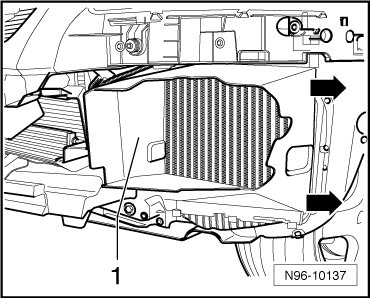
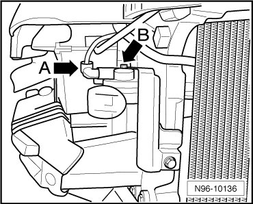

Horn: Service and Repair
Horn
• High Tone Horn (H2) and Low Tone Horn (H7) are activated in parallel by Vehicle Electrical System Control Module (J519).
• Removal and installation procedure for both horns is the same.
Removing
- Turn off the ignition and all electrical consumers.
- Remove noise insulation
- Unclip air guide - 1 - in - direction of arrow -.

- Disconnect harness connector - A -.

- Remove mounting bolt - B - and remove signal horn.
Installing
- Install in reverse order of removal.